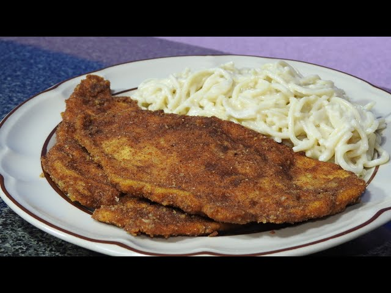

Ingredientes
- 2 pechugas de pollo
- 1 taza de sopa blanca (preparada o en polvo)
- ½ litro de agua (si usas sopa en polvo)
- 1 huevo
- Pan rallado
- Aceite para freír
- Lechuga, tomate y zanahoria al gusto
- Sal y pimienta
Preparación
- Si usas sopa en polvo, cocínala con agua siguiendo instrucciones. Reserva caliente.
- Lava y corta la lechuga, el tomate y la zanahoria para la ensalada.
- Bate el huevo. Pasa las pechugas por el huevo y luego por pan rallado.
- Fríe las pechugas en aceite caliente hasta que estén doradas.
- Sirve las pechugas sobre la ensalada y acompaña con la sopa blanca.
